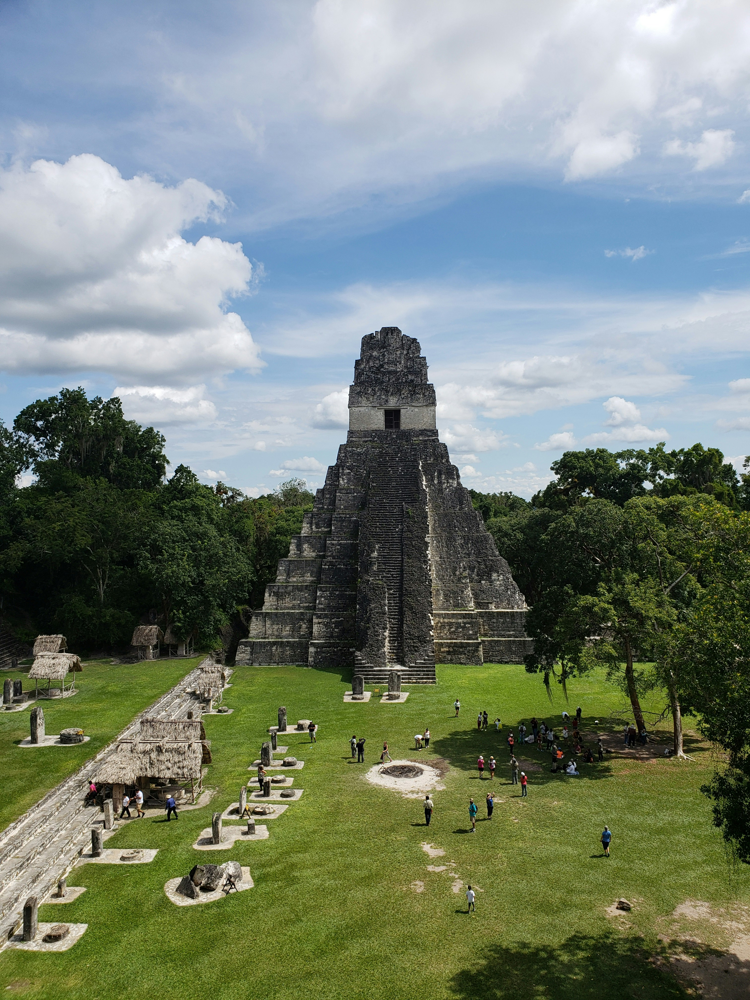

Tikal
Un sitio arqueologico maya lleno de historia y naturaleza

Lago de Atitlán
Uno de los lagos del mundo rodeado de volcanes

Antigua Guatemala
Ciudad colonial con arquitectura y cultura vibrante
¿Por que visitar Guatemala?
Guatemla es un pais lleno de cultura, historia y pasijes impresionantes.Desde antiguas cuidades mayas hasta hormosos lagos y volcanes es un destino perfecto para explorar y aprender